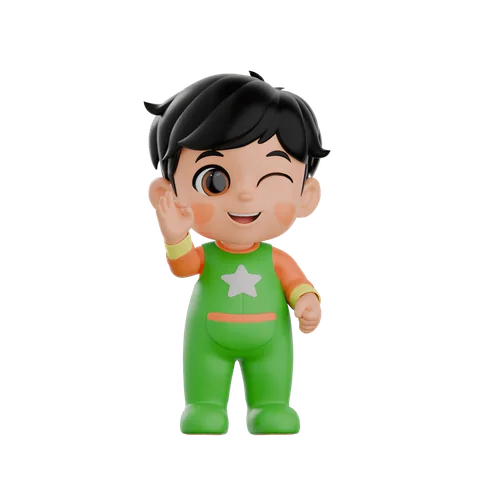

Privacy policy
Kebijakan privasi
Made for children. Nothing collected.
Dibuat untuk anak-anak. Tidak ada data yang dikumpulkan.
BabyMo Craft is a game for children. It has no ads, no accounts and no chat, and it does not collect any personal data. The iPhone and iPad app has one optional in-app purchase, “Full BabyMo Craft”.
BabyMo Craft adalah permainan untuk anak-anak. Tanpa iklan, tanpa akun, tanpa obrolan, dan tidak mengumpulkan data pribadi apa pun. Aplikasi iPhone dan iPad memiliki satu pembelian opsional, “BabyMo Craft Lengkap”.
🗓️ Last updated: 13 November 2026Terakhir diperbarui: 13 November 2026
We collect nothing.
Kami tidak mengumpulkan apa pun.
The game does not send any information about the child, the parent or the device to us or to anyone else. There are no analytics, no advertising, no tracking and no third-party services in the game.
Permainan ini tidak mengirim informasi apa pun tentang anak, orang tua, atau perangkat kepada kami maupun pihak lain. Tidak ada analitik, iklan, pelacakan, atau layanan pihak ketiga di dalam permainan.
📱What stays on the deviceYang tetap di perangkat
- Game progress (the world, the letters found, the lessons done, settings) is saved only on the device. Deleting the app deletes it. A grown-up can save it to a file and open it again from the parent settings.
- Location: only if a grown-up taps “use my location” for the prayer times, the device’s location is used on the device to work out the prayer times. It is not stored with us or sent anywhere.
- Photos and camera: only if a grown-up chooses a photo to match the avatar’s colours. The photo is read on the device to pick the colours and is not kept or sent anywhere.
- Kemajuan permainan (dunia, huruf yang ditemukan, pelajaran yang selesai, pengaturan) hanya disimpan di perangkat. Menghapus aplikasi akan menghapusnya. Orang tua bisa menyimpannya ke file dan membukanya lagi dari pengaturan orang tua.
- Lokasi: hanya jika orang tua mengetuk “pakai lokasiku” untuk jadwal sholat, lokasi perangkat dipakai di perangkat untuk menghitung jadwal sholat. Tidak disimpan oleh kami atau dikirim ke mana pun.
- Foto dan kamera: hanya jika orang tua memilih foto untuk mencocokkan warna avatar. Foto dibaca di perangkat untuk memilih warna, lalu tidak disimpan atau dikirim.
🔓The in-app purchasePembelian dalam aplikasi
“Full BabyMo Craft” is a one-time purchase that opens the rest of the island. It sits behind the grown-up check. The payment is handled entirely by Apple through the App Store: we never see payment details, names or Apple IDs, and the app only asks Apple whether the purchase was made on this account.
“BabyMo Craft Lengkap” adalah pembelian sekali bayar yang membuka seluruh pulau, di balik pemeriksaan orang dewasa. Pembayaran diproses sepenuhnya oleh Apple melalui App Store: kami tidak pernah melihat data pembayaran, nama, atau Apple ID, dan aplikasi hanya menanyakan ke Apple apakah pembelian sudah dilakukan di akun ini.
🧒ChildrenAnak-anak
The game is made for children and follows the App Store Kids Category rules: no links out of the app, no ads, and both the parent settings and the purchase are behind a grown-up check.
Permainan ini dibuat untuk anak-anak dan mengikuti aturan Kategori Anak App Store: tanpa tautan keluar dari aplikasi, tanpa iklan, dan pengaturan orang tua serta pembelian dilindungi pemeriksaan orang dewasa.
🔔ChangesPerubahan
If this ever changes, this page will be updated before the app changes.
Jika suatu saat ada perubahan, halaman ini akan diperbarui sebelum aplikasinya berubah.
✉️ContactKontak
Questions about privacy: see the support page.
Pertanyaan tentang privasi: lihat halaman bantuan.